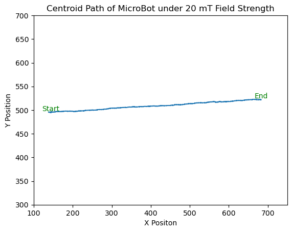
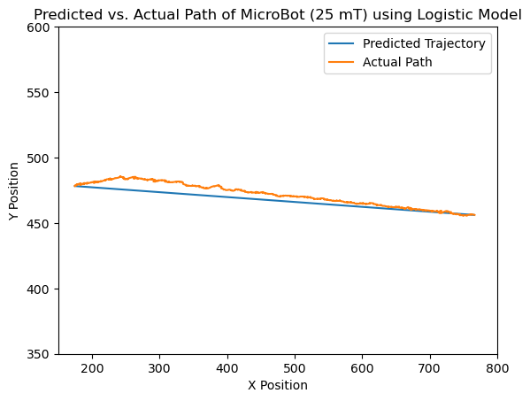
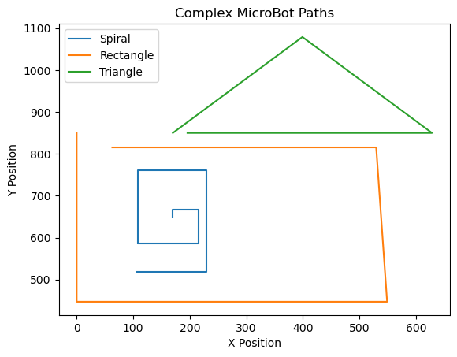

Code Implementation
Imports
In order to perform both image analysis of the MicroBot videos we film and generate interactive plots from the data we extract from each video, our code will utilize multiple python modules or libraries. The section of code below imports the necessary modules we need for our final code. For example, our final code uses “pandas” and “csv” for holding large data files, the “skimage” tools for image analysis, and the “seaborn” and “panel” libraries to give us more-professional final plots.
import numpy as np
import pandas as pd
import csv
# our image processing tools
import skimage.io as ski
import skimage
# plotting libraries
import matplotlib.pyplot as plt
# will help us load in multiple files!
import glob
from pathlib import Path
# for numerical inegration
import scipy.integrate as integrate
# for pretty plots
import seaborn as sns
from PIL import Image
# extra packages for interactive plots
import holoviews as hv
import bokeh.io
import panel as pn
# save lists
import pickle
bokeh.io.output_notebook()
pn.extension('mathjax')
hv.extension('bokeh')File Paths
The image analysis of the MicroBots will be filmed and stored within 1 to 2000 frame packages or folders. There will exist a total of 5 folders that each correspond to a different physical condition imposed upon the motion of the MicroBot. In the 20 mT folder, for instance, the robot is oriented to translate in a straight path from left to right across the screen using a magnetic field strength of 20 millitesla. The 25 mT, 30 mT, and 35 mT folders demonstrate a similar behavior of motion but showcase progressive increments in magnetic field strength of 5 millitesla each. The final “square” folder holds the frames for a video of a MicroBot moving in the path of a square on the screen, with each 90 degree turn representing a 5 mT incremental increase in field strength imposed on the robot. By having 5 distinct data files signifying gradual increases in magnetic field strength, the rest of the code will construct a pipeline for modeling the relationship between velocity and field strength in a compact equation. To unravel these packages and increase their utility for extracting measurements such as translational velocity, the following section of code specifies where each TIF package can be found locally in the directory. The “glob” module is then helpful for finding all of the file paths for the TIF-specific frames so that other functions can then store and interpret these image files.
# specify path
mT20 = "20mT/*.TIF"
mT25 = "25mT/*.TIF"
mT30 = "30mT/*.TIF"
mT35 = "35mT/*.TIF"
square = "Square/*.TIF"
# load in the image
mT20 = np.sort(glob.glob(mT20))
mT25 = np.sort(glob.glob(mT25))
mT30 = np.sort(glob.glob(mT30))
mT35 = np.sort(glob.glob(mT35))
square = np.sort(glob.glob(square))Real Video of Microbot Square Motion
In order to make sure that the paths for each of the data files containing the video frames were correctly routed, the example section of code below can be executed to generate a slider graph for the "square" video of the Microbot. If the path was correctly specified, the output should generate a plot that can be toggled frame-by-frame to see the movement of the MicroBot in a square across the screen!
# Plots the actual video frames of the "square: video for the MicroBot to comfirm the path was correctly defined
img_slider = pn.widgets.FloatSlider(name="Frame", start=0, end=1529, step=1, value=1)
# Plots slider function
def slider_plot(frame, frame_paths):
img_path = frame_paths[int(frame)]
img = Image.open(img_path)
img_array = np.array(img)
hv_image = hv.Image(img_array).opts(
cmap='gray', width=400, height=300,
xlabel="X Position", ylabel="Y Position",
title="Real Video of MicroBot Square Motion"
)
return hv_image
frame_paths = np.sort(square)
slider_plotter = pn.bind(slider_plot, img_slider, frame_paths)
pn.Column(img_slider, slider_plotter)Output:
The output is difficult to embed due to the website data display constraints. If you run it it should be a bit laggy but is essentially plotting the video that was shown in the Data Collection portion.
Aim 1: MicroBot Image Analysis of a Video to Determine Velocity and Parameterize Various Physical Constants
The first goal of the project will seek to extract and model a velocity equation from the videos collected for the MicroBot at varying magnetic field strengths. In order to find this equation, the images in each video will need to be analyzed to determine the velocity of the MicroBot in each video with respect to magnetic field strength. During the data collection process, we noted that each video itself is recorded at 38.67 frames per second and each pixel on the frame corresponds to 0.163 microns per pixel.
Thresholding & Labeling
After the paths for each of the MicroBots are specified, the next step is to begin the process of image analysis. The function below will be used to take each TIF frame or image in the video of the translating MicroBot and use the contrast of the darker robot in the video to threshold and median filter the image. Accounting for the implementation of different videos of different qualities, the threshold and median filtering parameters can be adjusted to ensure that the function only labels and filters the MicroBot in each image.
def threshold_filter_label(image, threshold=155, filter_size=6):
"""Given an image path, returns a labeled and filtered image. threshold and filter_size for median filter
can be changed. (image)"""
path = ski.imread(image) < threshold
selem = skimage.morphology.square(filter_size)
filtered = skimage.filters.median(path, selem)
labeled = skimage.measure.label(filtered)
return labeledFinding Centroids
Given the feedback we received when demonstrating our code to other groups, we realized that the run time of our program was being unnecessarily extended by processing large image files containing each of the image frames. To accommodate for this, the centroid function interprets the MicroBot as a single unit and tracks the movement of the robot with respect to its X and Y coordinates across the video. This way, the centroid data can be stored as a single dataset containing coordinate values that the rest of the code can interpret to extrapolate information such as velocity. This function relies on the previous thresholding step to then implement the “skimage” module for tracking the centroid as it moves from frame to frame.
def microbot_centroid(image):
"""Given an image path, returns the centroid of the pictured microbot. (tuple)"""
labeled_image = threshold_filter_label(image)
props = skimage.measure.regionprops(labeled_image)
x = props[0].centroid[1]
y = props[0].centroid[0]
return x, yNow that the program has constructed the framework to threshold, median filter, and interpret the TIF images as traceable centroids, the next step of the code entails performing the image analysis pipeline on each TIF frame in the 5 separate videos of the MicroBot. The following code utilizes a series of for-loops to loop through each data file for the varying MicroBot translation videos and appends the resulting coordinates of the moving centroids to separate lists. From these centroid datasets, the final coordinates of the MicroBot can be individually interpreted for varying parameters of magnetic field strength. Because this section of the code requires the longest run time, each for-loop also contains a print statement that allows the user to know once each of the videos are completely analyzed. In addition, the code allows for the processed data, a list of tuples with centroid coordinates, to be saved as a pickle file. The pickle file allows for the list to be stored as a binary file and read back into a variable as a list when needed. This greatly speeds up the run time and essentially adds a 'caching' feature to the data processing step.
Data Processing
It is important to wait for all of the print statements to finish before proceeding onto the next portions of the code! The run time is approximately 3 to 5 minutes. To save you the hastle if you download the *.pkl* files this step can be skipped.
'''Loops through each data file to perform thesholding, median filtering, and centroid tracking for all of the MicroBot videos
Running this first time without saved data will result in the processing and saving of the data. If there are pickled versions
then the code will load from that picked version and save you time.
'''
if Path("mT20_centroids.pkl").is_file():
print("Loading from saved version...")
with open("mT20_centroids.pkl", 'rb') as f:
mT20_centroids = pickle.load(f)
else:
mT20_centroids = []
for img in mT20:
mT20_centroids.append(microbot_centroid(img))
print("Saving...")
with open("mT20_centroids.pkl", 'wb') as f:
pickle.dump(mT20_centroids, f)
print('mT20 Done')
if Path("mT25_centroids.pkl").is_file():
print("Loading from saved version...")
with open("mT25_centroids.pkl", 'rb') as f:
mT25_centroids = pickle.load(f)
else:
mT25_centroids = []
for img in mT25:
mT25_centroids.append(microbot_centroid(img))
print("Saving...")
with open("mT25_centroids.pkl", 'wb') as f:
pickle.dump(mT25_centroids, f)
print('mT25 Done')
if Path("mT30_centroids.pkl").is_file():
print("Loading from saved version...")
with open("mT30_centroids.pkl", 'rb') as f:
mT30_centroids = pickle.load(f)
else:
mT30_centroids = []
for img in mT30:
mT30_centroids.append(microbot_centroid(img))
print("Saving...")
with open("mT30_centroids.pkl", 'wb') as f:
pickle.dump(mT30_centroids, f)
print('mT30 Done')
if Path("mT35_centroids.pkl").is_file():
print("Loading from saved version...")
with open("mT35_centroids.pkl", 'rb') as f:
mT35_centroids = pickle.load(f)
else:
mT35_centroids = []
for img in mT35:
mT35_centroids.append(microbot_centroid(img))
print("Saving...")
with open("mT35_centroids.pkl", 'wb') as f:
pickle.dump(mT35_centroids, f)
print('mT35 Done')
if Path("square_centroids.pkl").is_file():
print("Loading from saved version...")
with open("square_centroids.pkl", 'rb') as f:
square_centroids = pickle.load(f)
else:
square_centroids = []
for img in square:
square_centroids.append(microbot_centroid(img))
print("Saving...")
with open("square_centroids.pkl", 'wb') as f:
pickle.dump(square_centroids, f)
print('Square Done')Output:
Prints "Loading from saved version" if a pickled data file exists else processes the data and prints "mT## Done"
Because each video of the MicroBot is not completely perfect, we noticed that there was some deviation from a linear path for each video. In other words, theMicroBot moves in somewhat of a diagonal manner instead of a straight path. To calculate the degree of deviation or skew for each MicroBot video, this function takes the centroid data established in previous functions and uses the first and last centroid coordinates to measure the angle of the line connecting the two positions in radians.
def skew(centroids):
"""Given a list of centroids, returns the skew. (float, radians)"""
return (np.arctan((centroids[len(centroids)-1][1] - centroids[0][1])
/ (centroids[499][0] - centroids[0][0])))Then we verify if the plot path function works.
# Example plot to show that the plot_path function works
plot_path(mT20_centroids)
plt.xlim(100, 750)
plt.ylim(300, 700)
plt.xlabel("X Positon")
plt.ylabel("Y Position")
plt.title("Centroid Path of MicroBot under 20 mT Field Strength");Output:
We can compare the results of the plot_path function to the actual video of the MicroBot under 20 mT field strength conditions to see if our tracing function works:
# Plots the actual video frames of the 20 mT video for the MicroBot for comparison with the centroid path tracer function above
img_slider = pn.widgets.FloatSlider(name="Frame", start=0, end=499, step=1, value=1)
def slider_plot(frame, frame_paths):
img_path = frame_paths[int(frame)]
img = Image.open(img_path)
img_array = np.array(img)
hv_image = hv.Image(img_array).opts(
cmap='gray', width=400, height=300,
xlabel="X Position", ylabel="Y Position",
title="Real Video of MicroBot Under 20 mT"
)
return hv_image
frame_paths = np.sort(mT20)
slider_plotter = pn.bind(slider_plot, img_slider, frame_paths)
pn.Column(img_slider, slider_plotter);Output:
Unfortunately this plot is also too large to embed but all this plot does is plot the mT20 data like the video in the Data Collection Section.
To make sure that the coordinates of the centroids for all of the varying field strengths were correctly extrapolated by the previous sections of code, we then decided to visualize the centroid paths of all of the MicroBot videos. This graph demonstrates that the centroid data for each of the field strength conditions was effectively extracted:
# Test to demonstrate that the coordinates of all of the centroids for all of the field strengths were properly traced
frame_slider = pn.widgets.FloatSlider(name="Frame", start=0, end=499, step=1, value=1)
frame_set = [mT20_centroids, mT25_centroids, mT30_centroids, mT35_centroids, square_centroids]
colors = ['red', 'blue', 'green', 'lavender', 'gray']
labels = ['20 mT', '25 mT', '30 mT', '35 mT'] # Add corresponding labels
# Define the plotting function, such that it depends on the values of the slider
@pn.depends(frame_slider.param.value)
def slider_plotter(frame):
# Compute our x and y values
x0, y0 = frame_set[0][int(frame)]
trace0 = frame_set[0][0:frame]
x1, y1 = frame_set[1][int(frame)]
trace1 = frame_set[1][0:frame]
x2, y2 = frame_set[2][int(frame)]
trace2 = frame_set[2][0:frame]
x3, y3 = frame_set[3][int(frame)]
trace3 = frame_set[3][0:frame]
# Specify the list of y vs. x plots we want
list_of_curves = [
hv.Points(data=(x0, y0), kdims=["x", 'y'], label=f"{labels[0]}").opts(color=f'{colors[0]}', size=10),
hv.Points(data=(x1, y1), kdims=["x", 'y'], label=f"{labels[1]}").opts(color=f'{colors[1]}', size=10),
hv.Points(data=(x2, y2), kdims=["x", 'y'], label=f"{labels[2]}").opts(color=f'{colors[2]}', size=10),
hv.Points(data=(x3, y3), kdims=["x", 'y'], label=f"{labels[3]}").opts(color=f'{colors[3]}', size=10),
hv.Curve(trace0, label=f"{labels[0]}").opts(color=f'{colors[0]}'),
hv.Curve(trace1, label=f"{labels[1]}").opts(color=f'{colors[1]}'),
hv.Curve(trace2, label=f"{labels[2]}").opts(color=f'{colors[2]}'),
hv.Curve(trace3, label=f"{labels[3]}").opts(color=f'{colors[3]}'),
]
# Return the overlay with axis labels, title, and legend
return hv.Overlay(list_of_curves).opts(
ylim=(400, 900), xlim=(100, 900), show_grid=True,
width=400, height=300,
xlabel="X Position", ylabel="Y Position",
title="Centroid Paths for All Field Conditions",
legend_position="top_left"
)
pn.Column(frame_slider, slider_plotter)Output:
The code to embed the plot on the website is different than the code shown off at the top. If you want to take a look at the code that this plot was made with then here. The explanation can be lengthy for this code and ChatGPT aided me in coding this. But in essense this code creates a slider plot using bokeh (very similar to holoviews) and recodes the plot in JavaScript which is compatible with HTML. Then a HTML plot is created with the plot now coded in JavaScript and can be embedded into the site via an iframe object. -
from bokeh.plotting import figure, output_file, save
from bokeh.models import Slider, CustomJS, ColumnDataSource
from bokeh.layouts import column
# Example centroid data (replace with actual data)
import numpy as np
frames = len(mT20_centroids)
# Combine data into a single dictionary for JavaScript consumption
frame_set = {
'20 mT': mT20_centroids,
'25 mT': mT25_centroids,
'30 mT': mT30_centroids,
'35 mT': mT35_centroids,
}
colors = ['red', 'blue', 'green', 'lavender']
labels = list(frame_set.keys())
# Extract initial frame data
initial_frame = 0
x_values = [frame_set[label][initial_frame][0] for label in labels]
y_values = [frame_set[label][initial_frame][1] for label in labels]
# Create data sources for points and traces
source_points = ColumnDataSource(data={'x': x_values, 'y': y_values, 'color': colors, 'label': labels})
source_traces = ColumnDataSource(data={'xs': [[] for _ in labels], 'ys': [[] for _ in labels], 'color': colors, 'label': labels})
# Create the Bokeh figure
p = figure(
title="Centroid Paths for All Field Conditions",
x_range=(100, 900),
y_range=(400, 900),
width=600,
height=400,
)
p.circle('x', 'y', size=10, color='color', source=source_points, legend_field='label')
p.multi_line(xs='xs', ys='ys', color='color', source=source_traces)
# Add labels to axes
p.xaxis.axis_label = "X Position"
p.yaxis.axis_label = "Y Position"
# Add slider for frame selection
slider = Slider(start=0, end=frames - 1, value=0, step=1, title="Frame")
# JavaScript callback to update the plot based on slider value
callback = CustomJS(
args=dict(source_points=source_points, source_traces=source_traces, frame_set=frame_set, slider=slider),
code="""
const frame = slider.value;
const labels = source_points.data['label'];
const x_new = [];
const y_new = [];
const trace_x = [];
const trace_y = [];
// Update points and traces
for (let i = 0; i < labels.length; i++) {
const label = labels[i];
const centroids = frame_set[label];
x_new.push(centroids[frame][0]); // x position of current frame
y_new.push(centroids[frame][1]); // y position of current frame
// Extract trace up to the current frame
trace_x.push(centroids.slice(0, frame + 1).map(p => p[0])); // x positions
trace_y.push(centroids.slice(0, frame + 1).map(p => p[1])); // y positions
}
source_points.data['x'] = x_new;
source_points.data['y'] = y_new;
source_traces.data['xs'] = trace_x;
source_traces.data['ys'] = trace_y;
source_points.change.emit();
source_traces.change.emit();
"""
)
slider.js_on_change('value', callback)
# Layout and export
layout = column(slider, p)
output_file("interactive_centroid_paths.html")
save(layout)
Using the previously established information that each MicroBot video moves at 38.67 frames per second and the distance conversion rate is 0.163 microns per pixel, the code below is able to take a dataset for a given centroid and use the change in the initial and final X positions over time to determine the average velocity of the robot in the video. The code is also designed to evaluate the velocity of the MicroBot in the Y direction, which combines holistically with the X velocity to produce a total velocity measure. An example of the velocity measurement for the MicroBot under 20 mT field conditions is shown.
def velocity(image_set, start_frame, end_frame):
"""Given a centroid list, start frame, and end frame, returns the average velocity of the microbot over
the images. (float, pixels/frame)"""
total_time = (end_frame - start_frame) / 38.67 #frames per second
displacement_x = (image_set[end_frame][0]
- image_set[start_frame])[0] * 0.163 # microns per pixel
displacement_y = (image_set[end_frame][1]
- image_set[start_frame])[1] * 0.163 #microns per pixel
# Velocity calculations
velocity_x = displacement_x / total_time
velocity_y = displacement_y / total_time
displacement_total = np.sqrt((displacement_x**2)+(displacement_y**2))
velocity_total = displacement_total / total_time
return velocity_x, velocity_y, velocity_total
# Test to see if the velocity function properly determines the x, y, and total velocities of the MicroBot
x_velocity = velocity(mT20_centroids, 0, 499)[0]
y_velocity = velocity(mT20_centroids, 0, 499)[1]
total_velocity = velocity(mT20_centroids, 0, 499)[2]
print(f"Under 20 mT conditions, the X-axis velocity of the Microbot is {x_velocity} microns per second, the Y-axis velocity of the Microbot is {y_velocity} microns per \
second, and the total velocity is {total_velocity} microns per second.")Output:
Under 20 mT conditions, the X-axis velocity of the Microbot is 6.818535650366029 microns per second, the Y-axis velocity of the Microbot is -0.33960731737662603 microns per second, and the total velocity is 6.826987735841352 microns per second.
With a program set in place to accurately measure the translational velocities of each of the MicroBot videos under varying field strengths, an equation representing the velocity as a function of field strength can now be modeled. For the purpose of simplification, our velocity equation will rely on a simplified model where 𝑣 is the velocity in microns per second, 𝜇 is an arbitrary parameter representing all physical constants in the system that we are simplifying (such as friction forces, drag forces, Reynolds number, etc.), and 𝐵 represents the magnetic field strength in mT:
Aim 2: Approaching a Means of Plotting Trajectories of MicroBot Motion Using a Parameterized Equation
The second goal of the project is to employ the velocity model we generated with respect to magnetic field strength to create a series of functions or programs that can utilize the function to simulate the possible trajectories of the MicroBot. We will first try to use our 𝑣=𝜇𝐵 equation to create our trajectory prediction models and evaluate thereafter if this equation is a viable model that can be used to depict the translational behavior of the MicroBot under differing magnetic field conditions and parameters.
The function below uses our parameterized equation, 𝑣=𝜇𝐵, to generate the X and Y coordinates for the projected linear trajectory of the MicroBot with a given input for 𝜇 and 𝐵. We have also included an example output for the function to show the array that the function produces, with the first value in each embedded list representing the X position of the trajectory point and the second value in each embedded list representing the Y position of the trajectory point. Altogether, the trajectory points generate a linear path representing the predicted path of the MicroBot under the given parameters.
def predict(centroid_list, mu, B):
"""Given a centroid list, field strength, and mu, returns a list of centroids predicting the path of
the microbot. (list)"""
prediction = np.zeros_like(centroid_list)
prediction[0] = centroid_list[0]
for i in range(len(prediction)-1):
# Using out paramterized equation
dx = B * mu
dy = -.045
prediction[i+1][1] = prediction[i][1] + dy
prediction[i+1][0] = prediction[i][0] + dx
return prediction
# Example output of array of X and Y coordinates for the trajectory line
predict(mT20_centroids, 0.04, 20)[0:5]Output:
array([[143.01355932, 522.00338983],
[143.81355932, 521.95838983],
[144.61355932, 521.91338983],
[145.41355932, 521.86838983],
[146.21355932, 521.82338983]])
In order to visualize the previous prediction function that we created, the purpose of the plot_prediction function is to take the specific parameters being tested within our velocity equation and generate a slider plot that can be adjusted in terms of frames and 𝜇 to show the various trajectories. By designing the code this way, the progression of the MicroBot at different frames or points in time can be visualized with varying linear trajectories governed by changes in 𝜇. Feel free to play around with the sliders and note how the red line symbolizes the predicted trajectory while the blue line represents the true path of the MicroBot. Our example uses the MicroBot moving under 35 mT field conditions.
def plot_prediction(centroid_list, B, mu0=.04, frame0=0):
"""Given a centroid list, and B, plots the microbot position, microbot path, and predicted path with
sliders for frame and mu. (plot)"""
frame_slider = pn.widgets.FloatSlider(name="frame", start=0, end=499, step=1, value=frame0)
mu_slider = pn.widgets.FloatSlider(name="mu", start=0, end=.1, step=.0001, value=mu0)
@pn.depends(frame_slider.param.value, mu_slider.param.value)
def slider_plotter(frame, mu):
# compute our x and y values
x0, y0 = centroid_list[int(frame)]
points = centroid_list[0:frame]
prediction = predict(centroid_list, mu, B)
prediction_points = prediction[0:frame]
# Specify the list of y vs. x plots we want
list_of_curves = [
hv.Points(data=(x0, y0), kdims=["x", 'y'], label="Actual Path").opts(color='blue', size=10),
hv.Curve(points, label="Actual Path"),
hv.Curve(prediction_points, label="Predicted Trajectory")
]
return hv.Overlay(list_of_curves).opts(
ylim=(400, 900), xlim=(100, 800), show_grid=True, width=400, height=300,
xlabel="X Position", ylabel="Y Position", title="Predicted Trajectories of MicroBot at 35 mT",
legend_position='top_left'
)
return pn.Column(slider_plotter, frame_slider, mu_slider)Output:
This plot is also the same deal as the interactive plot above. Here is the code if you want to look at it:
from bokeh.plotting import figure, output_file, save
from bokeh.models import Slider, CustomJS, ColumnDataSource
from bokeh.layouts import column
import numpy as np
def predict(centroid_list, mu, B):
"""Generate predicted trajectory based on centroid_list, mu, and B."""
prediction = np.zeros_like(centroid_list)
prediction[0] = centroid_list[0]
for i in range(len(prediction)-1):
dx = B * mu
dy = -0.045
prediction[i+1][1] = prediction[i][1] + dy
prediction[i+1][0] = prediction[i][0] + dx
return prediction
# Initial values
B = 35
mu_initial = 0.04
frame_initial = 0
frames = len(mT35_centroids)
# Initial actual and predicted data
actual_data = np.array(mT35_centroids)
predicted_data = predict(actual_data, mu_initial, B)
# Data for plotting
source_actual = ColumnDataSource(data={
'x': [actual_data[frame_initial][0]], # Single-element list for the initial frame
'y': [actual_data[frame_initial][1]], # Single-element list for the initial frame
'current_x': [actual_data[frame_initial][0]], # Single-element list
'current_y': [actual_data[frame_initial][1]] # Single-element list
})
source_predicted = ColumnDataSource(data={
'x': [predicted_data[frame_initial][0]], # Single-element list for x-coordinates
'y': [predicted_data[frame_initial][1]] # Single-element list for y-coordinates
})
# Sliders (defined first)
frame_slider = Slider(start=0, end=frames-1, value=frame_initial, step=1, title="Frame")
mu_slider = Slider(start=0, end=0.1, value=mu_initial, step=0.001, title="Mu")
# Create figure
p = figure(
title="Predicted Trajectories of MicroBot at 35 mT",
x_range=(100, 800),
y_range=(400, 900),
width=600,
height=400
)
# Plot actual and predicted trajectories
p.line('x', 'y', source=source_actual, line_width=2, color='blue', legend_label="Actual Path")
p.circle('current_x', 'current_y', source=source_actual, size=10, color='blue', legend_label="Current Position")
p.line('x', 'y', source=source_predicted, line_width=2, color='red', legend_label="Predicted Trajectory")
# Axis labels
p.xaxis.axis_label = "X Position"
p.yaxis.axis_label = "Y Position"
p.legend.location = "top_left"
# CustomJS callback (after sliders are defined)
callback = CustomJS(
args=dict(
source_actual=source_actual,
source_predicted=source_predicted,
actual_data=actual_data.tolist(),
predicted_data=predicted_data.tolist(),
slider=frame_slider,
mu_slider=mu_slider
),
code="""
const frame = slider.value; // Get current frame from slider
const mu = mu_slider.value; // Get current mu value from slider
// Update predicted data based on new mu
const B = 35;
const prediction = [];
prediction.push(predicted_data[0]); // Start from the first point
for (let i = 1; i < predicted_data.length; i++) {
const dx = B * mu;
const dy = -0.045;
prediction.push([prediction[i-1][0] + dx, prediction[i-1][1] + dy]);
}
// Update actual and predicted trajectories up to the current frame
source_actual.data = {
'x': actual_data.slice(0, frame + 1).map(p => p[0]),
'y': actual_data.slice(0, frame + 1).map(p => p[1]),
'current_x': [actual_data[frame][0]],
'current_y': [actual_data[frame][1]]
};
source_predicted.data = {
'x': prediction.slice(0, frame + 1).map(p => p[0]),
'y': prediction.slice(0, frame + 1).map(p => p[1])
};
source_actual.change.emit();
source_predicted.change.emit();
"""
)
# Attach callback to sliders
frame_slider.js_on_change('value', callback)
mu_slider.js_on_change('value', callback)
# Layout and save to HTML
layout = column(p, frame_slider, mu_slider)
output_file("bokeh_microbot_trajectories.html")
save(layout)So now we have a computational tool that can predict the trajectory of the MicroBot using a parameterized equation we modeled with respect to velocity! However, after evaluating the trajectory line with respect to the actual path, we realized from peer feedback that the model itself could be even closer to predicting the true path of the MicroBot. In order to build upon our pipeline, the next step of our project emphasized the use of a new, non-linear model to predict the translational behavior of our MicroBot.
After some thinking, we decided to proceed with a logistic model to predict the motion of our MicroBots considering that this type of model generated the best line of fit to the actual path of the MicroBot during testing. Specifically, the logistic model we chose follows the equation below where 𝑣 is velocity in microns per second and 𝐵 is magnetic field strength in mT:

With a new logistic model for the velocity of our MicroBot, the function below takes a specific list of centroids for the field strength we want to visualize and plots both the actual path of the MicroBot alongside the predicted trajectory of the MicroBot from the logistic equation above. This function also accounts for skew in the original path of the MicroBot or slight deviation in its linear motion over time. An example of the function using the logistic trajectory model is also output below the function using the Microbot under 25 mT field strength conditions.
def x_y_vals(centroid_list):
"""Given a centroid list, returns the x and y values of the centroid in 2 lists. (x, y = list)"""
x = []
y = []
for item in centroid_list:
x.append(item[0])
y.append(item[1])
return x, y
def predict_logistic_from_centroids(centroids, B):
"""Given a centroid list, field strength, returns a list of centroids predicting the path of
the microbot. (list)"""
path_skew = skew(centroids)
prediction = np.zeros_like(centroids)
prediction[0] = centroids[0]
for i in range(len(prediction)-1):
velocity = 1.231510719 / (1 + 20.66319666*np.exp(-0.2509096863*B))
dx = np.cos(path_skew) * velocity
dy = np.sin(path_skew) * velocity
prediction[i+1][1] = (prediction[i][1]) + dy
prediction[i+1][0] = (prediction[i][0]) + dx
return prediction
# Plots the actual and predicted path of the MicroBot using the logistic prediction function
prediction_25_x, prediction_25_y = x_y_vals(predict_logistic_from_centroids(mT25_centroids, 25))
plt.plot(prediction_25_x, prediction_25_y)
mT25_x, mT25_y = x_y_vals(mT25_centroids)
plt.plot(mT25_x, mT25_y)
plt.xlabel("X Position")
plt.ylabel("Y Position")
plt.title("Predicted vs. Actual Path of MicroBot (25 mT) using Logistic Model")
plt.xlim(150, 800)
plt.ylim(350, 600)
plt.legend(["Predicted Trajectory", "Actual Path"]);Output:
As you can see, the new logistic model matrches very closely with the actual path of the robot. Moving forward, the functions we utilize to plot MicroBot trajectories will rely on this logistic model to predict the translational behavior of the MicroBot over time. The plot_actual_function below, for example, is designed to input a starting pair of X and Y coordinates associated with the starting position of the MicroBot on the X-Y plane and use the predict_logistic_from_centroids function to create an interactive slider plot with respect to the field strength, angle of motion, and the time. The purpose of this function is to predict the trajectory of the MicroBot without referencing its actual path along a plot that can be dynamically updated by toggling the sliders. The linear path produced by the function will act as a starting point for predicting more-complex MicroBot paths down the road. Below, we have also included an example output of the function to demonstrate the trajectory of a MicroBot starting at the position (0,0).
Output:
This plot is also the same deal as the interactive plot above. Here is the code if you want to look at it:
from bokeh.plotting import figure, output_file, save
from bokeh.models import Slider, CustomJS, ColumnDataSource
from bokeh.layouts import column
import numpy as np
# Define the prediction function
def predict_logistic(x0_y0, B, path_skew, out_len):
"""Generate predicted trajectory based on initial position, field strength, skew, and length."""
path_skew = np.radians(path_skew)
prediction = np.empty((out_len, 2))
prediction[0] = x0_y0
for i in range(len(prediction)-1):
velocity = 1.231510719 / (1 + 20.66319666 * np.exp(-0.2509096863 * B))
dx = np.cos(path_skew) * velocity
dy = np.sin(path_skew) * velocity
prediction[i+1][1] = prediction[i][1] + dy
prediction[i+1][0] = prediction[i][0] + dx
return prediction
# Initial condition and parameters
initial_condition = (0, 0)
field_initial = 20
angle_initial = 45
time_initial = 100
frames = 1000
# Generate initial prediction
initial_prediction = predict_logistic(initial_condition, field_initial, angle_initial, time_initial)
# Data for plotting
source = ColumnDataSource(data={
'x': initial_prediction[:, 0],
'y': initial_prediction[:, 1]
})
# Create figure
p = figure(
title="Predicted Trajectory Using Logistic Model",
x_range=(-1000, 1000),
y_range=(-1000, 1000),
width=600,
height=600
)
p.line('x', 'y', source=source, line_width=2, color='blue')
p.xaxis.axis_label = "Predicted X Position"
p.yaxis.axis_label = "Predicted Y Position"
# JavaScript callback
callback = CustomJS(
args=dict(
source=source,
initial_condition=initial_condition,
frames=frames
),
code="""
const B = field_slider.value; // Field strength
const angle = angle_slider.value; // Path skew
const time = time_slider.value; // Time steps
// Convert angle to radians
const path_skew = angle * (Math.PI / 180);
// Initialize prediction array
const prediction = Array(time).fill().map(() => [0, 0]);
prediction[0] = initial_condition;
// Compute prediction trajectory
for (let i = 1; i < time; i++) {
const velocity = 1.231510719 / (1 + 20.66319666 * Math.exp(-0.2509096863 * B));
const dx = Math.cos(path_skew) * velocity;
const dy = Math.sin(path_skew) * velocity;
prediction[i][0] = prediction[i-1][0] + dx;
prediction[i][1] = prediction[i-1][1] + dy;
}
// Update source data
source.data['x'] = prediction.map(p => p[0]);
source.data['y'] = prediction.map(p => p[1]);
source.change.emit();
"""
)
# Sliders
field_slider = Slider(start=5, end=40, value=field_initial, step=1, title="Field (mT)")
angle_slider = Slider(start=0, end=359, value=angle_initial, step=0.1, title="Angle (degrees)")
time_slider = Slider(start=100, end=frames, value=time_initial, step=1, title="Time (steps)")
field_slider.js_on_change('value', callback)
angle_slider.js_on_change('value', callback)
time_slider.js_on_change('value', callback)
callback.args['field_slider'] = field_slider
callback.args['angle_slider'] = angle_slider
callback.args['time_slider'] = time_slider
# Layout and save to HTML
layout = column(p, field_slider, angle_slider, time_slider)
output_file("bokeh_logistic_trajectory.html")
save(layout)As I am sure you are aware, the environments of the human body are a lot more complex than a single linear path. In order to account for greater complexity in the environments that the MicroBot will need to migrate through, the complex_path function below builds upon the logistic computational tool we have constructed above and uses the model to construct varying trajectories of shapes and paths based on the initial input of the user. Specifically, the function takes in an initial position as well as the coordinates for a complex path (in the form of an array of lists) and builds the predicted trajectory of the MicroBot based on these conditions.
def complex_path(initial, path_description):
"""Given an initial position and list describing a complex path, returns a list of
predicted centroids for the complex path. (list) {path_description = [[strength, angle, time], ...]}"""
path=[]
segment_path = predict_logistic(initial, path_description[0][0], path_description[0][1], path_description[0][2])
for centroid in segment_path.tolist():
path.append(centroid)
# Using the predict_logistic function to segment complex path
for segment in path_description[1:]:
segment_path = predict_logistic(tuple(segment_path[-1]), segment[0], segment[1], segment[2])
for centroid in segment_path.tolist():
path.append(centroid)
return pathAfter the trajectory of the centroids for the MicroBot is calculated to the specifications of the complex_path function, the plot_complex_path function will be used to take in the list of centroids as well as the initial position of the MicroBot to graphically visualize how the MicroBot will move over time.
Below, we have included an example application of this function where we predict the trajectory of the MicroBot moving in the shape of a rectangle, triangle, and spiral shape.
# Example paths used to demonstrate plot_complex_path function
paths = {
'rectangle' : [
[20, 270, 373],
[25, 0, 464],
[30, 93, 304],
[35, 180, 381]
],
'triangle' : [
[20, 45, 300],
[20, -45, 300],
[20, 180, 400]
],
'spiral' : [
[ 5, 90, 100],
[10, 0, 100],
[15, 270, 100],
[20, 180, 100],
[25, 90, 150],
[30, 0, 100],
[35, 270, 200],
[40, 180, 100]
]
}
# Plot complex trajectories of the MicroBot
plot_complex_path(paths['spiral'], (170,650))
plot_complex_path(paths['rectangle'], (0,850))
plot_complex_path(paths['triangle'], (170,850))
plt.title("Complex MicroBot Paths")
plt.xlabel("X Position")
plt.ylabel("Y Position")
plt.legend(["Spiral", "Rectangle", "Triangle"]);Output:
